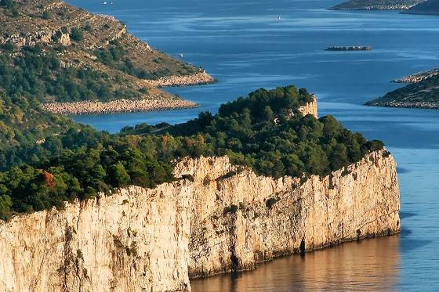

For its extreme beauty, richness and importance, this bay surrounded by 13 islands and islets, together with 6 islets inside the bay itself, was proclaimed a Nature Park in 1988. Telašćica acquired the status of a protected area already in 1980 because of its valuable flora and fauna, geological and geomorphological phenomena, versatile sea bottom life, and interesting archaeological heritage. The area of Nature Park Telašćica is a distinctly contrasted area with quiet and peaceful beaches and a laid down coastline on one side, and wild and steep cliffs on the other, an area of Aleppo pine and holm oak forests on one side, and barren karst on the other, an area of cultivated fields covered in vineyards and olive groves, but also an area of degraded forms of vegetation covering dry habitats. Three basic phenomena represent the basic characteristics of this area: the unique Telašćica Bay as the safest, most beautiful and largest natural port of the Adriatic with 25 small beaches, the cliffs of Dugi Otok or the so-called “stene” rising up to a height of 161 metres above the sea and reaching down to a depth of 90 metres, and the salt lake “Mir” with its medicinal properties. The most picturesque among the islands is the Katina Island, and the most unusual one is certainly Taljurić. The total surface area of the Nature Park is 70.50 km2, with 25.95 km2 on Dugi Otok and the neighbouring islets, and 44.55 km2 at sea. The environment is covered in beautiful cultivated meadows, and the hills are covered in rich Mediterranean flora with more than 500 plant species and an equally rich fauna. The underwater world counts more than 300 plant and 300 animal species. The climate is characterised by more than 2 500 sunshine hours per year, an average temperature higher than 7°C in January, and an average annual temperature higher than 16°C. During winter the temperature of the sea is around 13°C, and during summer around 23°C. Remains of ancient buildings in Mala Proversa, as well as numerous pre-Romanesque churches, with St. John’s Church in Stivanje Polje as the most prominent one, are testimony that Telašćica has been populated since ancient times, and the first written record of fishing dating from the end of the 10th century is testimony that the beginnings of fishing in Croatia began precisely on these shores. Diving in the Nature Park is possible in several attractive locations near cliffs, and it is also possible to take walks around interesting places – be sure not to miss the beautiful view from the Grpašćak viewpoint. The above, and much more, has attracted and is attracting visitors to Telašćica Bay, which deservingly falls into the top category of protected nature parts as a Nature Park of the Republic of Croatia. Three national parks are located near Nature Park Telašćica: National Park Kornati, National Park Paklenica and National Park Krka, as well as two nature parks – Nature Park Vransko Jezero and Nature Park Velebit.